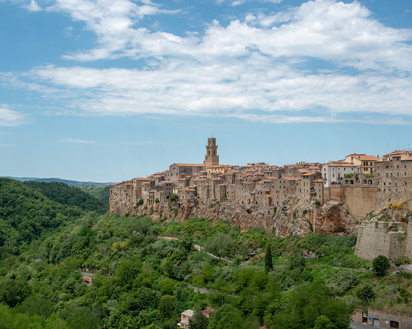
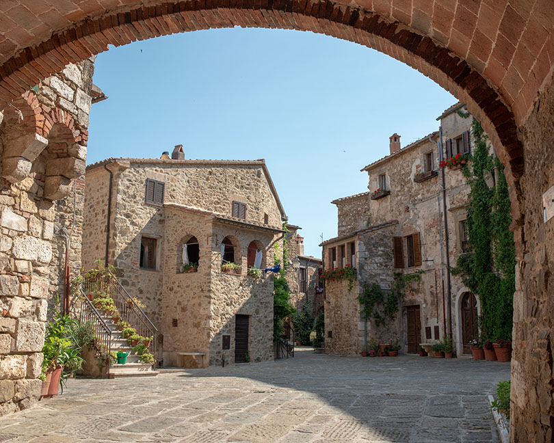

概要
トスカーナ南西部のマレンマ地方は知名度は低いがいくつの美しい小さな町がある ラツィオとの州境に位置しはローマとフィレンツェの中間ぐらいに位置しする。 これらの町は凝灰岩という火山灰が堆積されて形成された岩石の上にあり、 紀元前にエトルリア人により作られ、中世に発展した歴史をもつ。
ピティリアーノ(Pitigliano)

ピティリアーノはオルヴィエートから西50kmほど、トスカーナ南西部マレンマ地方の町。 凝灰岩の切り立った崖とその上にたつ中世からの建物が壮観が素晴らしい。 旧市街は西方向に半島状に突出しており南・西・北の三方向が断崖に囲まれている。 新市街の南西部のSan Michele通りから旧市街が崖越しに見ることができる。 ピティリアーノはイタリアの小さなエルサレムとも呼ばれ、16世紀以降迫害をのがれてきたユダヤ人が長く住んでいた。 現在でもシナゴーグが残っている。
ソラーノ(Sorano)
ソラーノもピティリアーノと同様は半島状に突出した凝灰岩の上に作られた町。 規模はだいぶ小さく、森のなかにひっそりと佇んでいる。 旧市街の南西部の入り口からみる屋根が広がる風景や町の東側から見上げる町が印象的だった。
ソヴァーナ(Sovana)
この町は本当に小さくプレトリオ広場と大聖堂をつなぐ道が並行して二本あるだけの小ささ。 道は花と町の旗とで飾り付けされている。町には何もないだけに雰囲気はある。 飾りけのないロマネスク調の大聖堂が町に調和している。
モンテメラーノ(Montemerano)
 モンテメラーノはピティリアーノから20kmほど西にある人口500人程度の小さな町。 ここも凝灰岩の上にできた小高い丘に佇む町。 町の中にはほとんど観光客もいなく、余計な看板なども殆ど無い。 メインの通りから階段を登ったところにあるカステッロ広場は 中世から何も変わっていないのではないかと錯覚してしまうほどの美しさ。 実はこの町のことは来るまではほとんど何も知らかったので嬉しい誤算だった。 イタリアの最も美しい村々の一つであると知り納得できる。
この町にはダ・カイーノというレストランがあり、そこで食事をするのが目的で訪れた。 遠回りをしてでも訪れる価値があるという評価に値するレストランだった。 ヨーロッパの地方の高級レストランはホテルが併設されている場合が多い。 レストランで食べ終わったらすぐに部屋に戻れるというのも良い。
町の大きさの比較
| 長さ | 高さ | |
|---|---|---|
| Orvieto | 1500m | 200m |
| Montepuluciano | 1200m | 110m |
| Pitlgiano | 700m | 100m |
| Montalcino | 700m | 100m |
| Sorano | 400m | |
| Civita | 300m | |
| Montemerano | 300m |